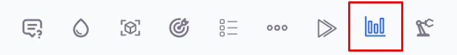
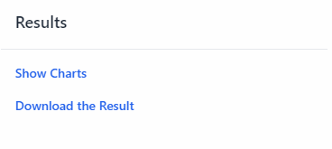
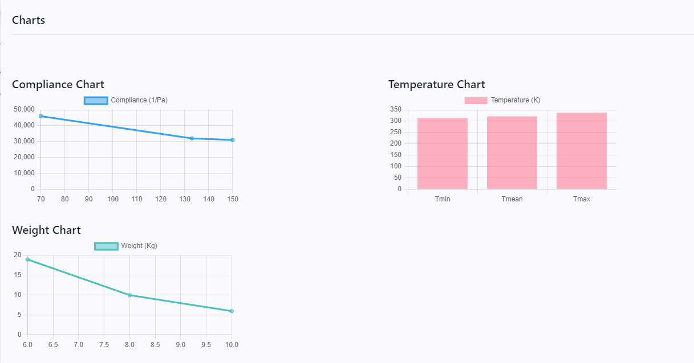

Results
This section provides an overview of how to view and interpret the results of your 3D modeling projects on our platform. Once the optimization process is complete, you can access detailed results through the interface.
Viewing Results
To view the results of your project, follow these steps:
Show Results: Click the "Show Results" button on the interface. This will display various charts and graphs that represent the outcome of your optimization process.
The results are displayed in the form of charts, which provide a visual representation of key metrics. The main charts include:
-
Compliance Chart: This chart shows the compliance of the model in 1/Pa (inverse Pascals). Compliance is a measure of the flexibility of the structure. Lower compliance values indicate a stiffer structure.
-
Temperature Chart: This chart displays the temperature distribution across the surface of the model. It shows the minimum, mean, and maximum temperatures in Kelvin (K).
-
Weight Chart: This chart presents the weight of the model in kilograms (Kg). It helps in understanding the mass distribution and optimization of the structure.
Downloading Results
For further analysis or record-keeping, you can download the results of your project. Follow these steps:
Download Results: Click the "Download Results" button on the interface. This will initiate the download of a file containing all the detailed results of your project.
The downloaded file includes:
- **Charts Data**: Detailed data points used to generate the compliance, temperature, and weight charts.
- **Optimization Summary**: A summary of the optimization process, including the initial parameters, boundary conditions, and the final optimized values.
- **Configuration Settings**: The settings and configurations used for the optimization, which can be useful for reproducing or modifying the project in the future.
Interpreting the Charts
Understanding the charts is crucial for evaluating the performance and effectiveness of your optimized model. Here are some key points to consider:
- Compliance Chart: Analyze the trend of compliance values. A decreasing trend indicates an increase in the stiffness of the model, which is desirable for structural applications.
- Temperature Chart: Evaluate the temperature distribution to ensure that the model meets the thermal compliance requirements. Look for uniform temperature distribution or specific patterns as per the project's needs.
- Weight Chart: Check the weight reduction achieved through the optimization process. This helps in assessing the material efficiency and overall mass reduction.
The results section provides a comprehensive view of the optimization outcomes, helping you make informed decisions about your 3D model. By effectively interpreting the charts and downloading the detailed results, you can ensure that your model meets the desired criteria for structural and thermal performance.
By following the above guidelines, you can efficiently analyze and utilize the results generated by our platform to enhance your 3D modeling projects.